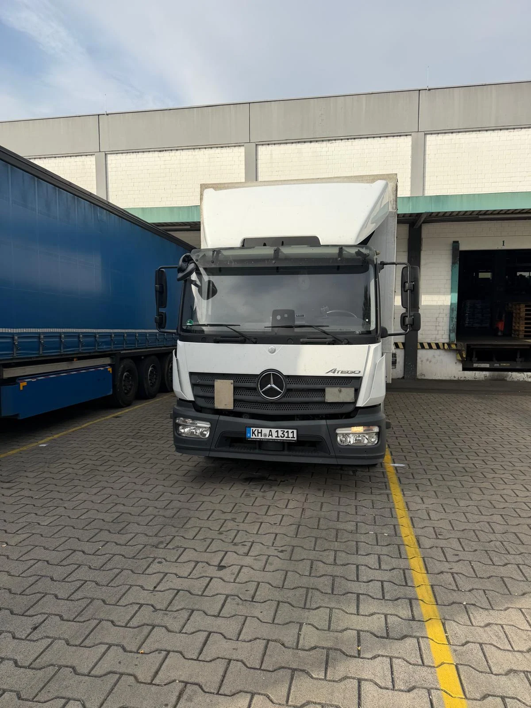

Gemeinschaftslizenz
Für den grenzüberschreitenden gewerblichen Güterkraftverkehr liegt eine Gemeinschaftslizenz vor.

ANKA TRANSPORT aus Bad Kreuznach.
Ihr Partner für LKW mit Fahrer im Festeinsatz.

BAD KREUZNACH · RHEINLAND-PFALZInhabergeführt von Zafer Beyazdogan. Mit Sitz in Bad Kreuznach.
Als Subunternehmer unterstützen wir Speditionen, Logistikdienstleister und Unternehmen mit LKW und Fahrer im Festeinsatz. Persönliche Zusammenarbeit und klare Vereinbarungen bilden die Grundlage.
7,5-Tonner, 12-Tonner, 18-Tonner und Sattelzüge: Welches Fahrzeug für Ihre Touren passt, stimmen wir mit Ihnen ab.
Für den grenzüberschreitenden gewerblichen Güterkraftverkehr liegt eine Gemeinschaftslizenz vor.
Es liegt eine Versicherungsbestätigung über eine Güterschaden-Haftpflichtversicherung gemäß § 7a GüKG vor.
Welche Fahrzeugklasse, welcher Einsatzort, welcher Start? Bereiten Sie Ihren Bedarf für die persönliche Abstimmung vor.
Telefon: 0176 83227144
E-Mail: ankatransport@outlook.de